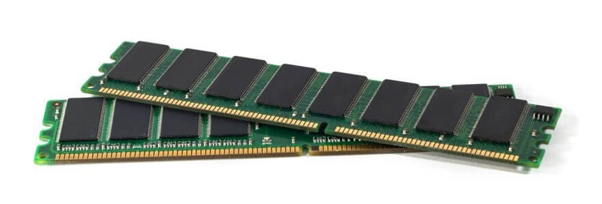

Modulos de memoria RAM

En 1947, Tom Kilburn, Frederic C. Williams, y Geoff Tootill de la
Universidad de Mánchester desarrollaron la primera memoria RAM
práctica, el Tubo Williams (Williams tube),[5] La memoria estaba
construido a partir de un tubo de rayos catódicos y se utilizó con
éxito en el primer computador del mundo con programa almacenado,
el Manchester Baby en 1948.[6][7][8]
Uno de los primeros tipos de memoria RAM fue la memoria de núcleo
magnético, desarrollada entre 1949 y 1952 y usada en muchos
computadores hasta el desarrollo de circuitos integrados a finales
de los años 60 y principios de los 70. Esa memoria requería que
cada bit estuviera almacenado en un toroide de material
ferromagnético de algunos milímetros de diámetro, lo que resultaba
en dispositivos con una capacidad de memoria muy pequeña.
Antes que eso, las computadoras usaban relés y líneas de retardo
de varios tipos construidas para implementar las funciones de
memoria principal con o sin acceso aleatorio.
En 1969 fueron lanzadas una de las primeras memorias RAM basadas en
semiconductores de silicio por parte de Intel con el integrado 3101
de 64 bits de memoria y para el siguiente año se presentó una
memoria DRAM de 1024 bits, referencia 1103 que se constituyó en un
hito, ya que fue la primera en ser comercializada con éxito,
lo que significó el principio del fin para las memorias de núcleo
magnético. En comparación con los integrados de memoria DRAM
actuales, la 1103 es primitiva en varios aspectos, pero tenía
un desempeño mayor que la memoria de núcleos.
En 1973 se presentó una innovación que permitió otra miniaturización
y se convirtió en estándar para las memorias DRAM: la multiplexación
en tiempo de la direcciones de memoria. MOSTEK lanzó la referencia
MK4096 de 4096 bytes en un empaque de 16 pines,[9] mientras sus
competidores las fabricaban en el empaque DIP de 22 pines.
El esquema de direccionamiento[10] se convirtió en un estándar de
facto debido a la gran popularidad que logró esta referencia de
DRAM. Para finales de los 70 los integrados eran usados en la
mayoría de computadores nuevos, se soldaban directamente a las
placas base o se instalaban en zócalos, de modo que ocupaban un
área extensa de circuito impreso. Luego se hizo obvio que
instalar la RAM en el impreso principal impedía miniaturizar,
entonces se idearon los primeros módulos de memoria como el
SIPP, usando las ventajas de la construcción modular. El
formato SIMM fue una mejora al anterior. Eliminó los pines
metálicos y dejó áreas de cobre en uno de los bordes del
impreso, muy similares a los de las tarjetas de expansión,
de hecho los módulos SIPP y los primeros SIMM tienen igual
distribución de pines.